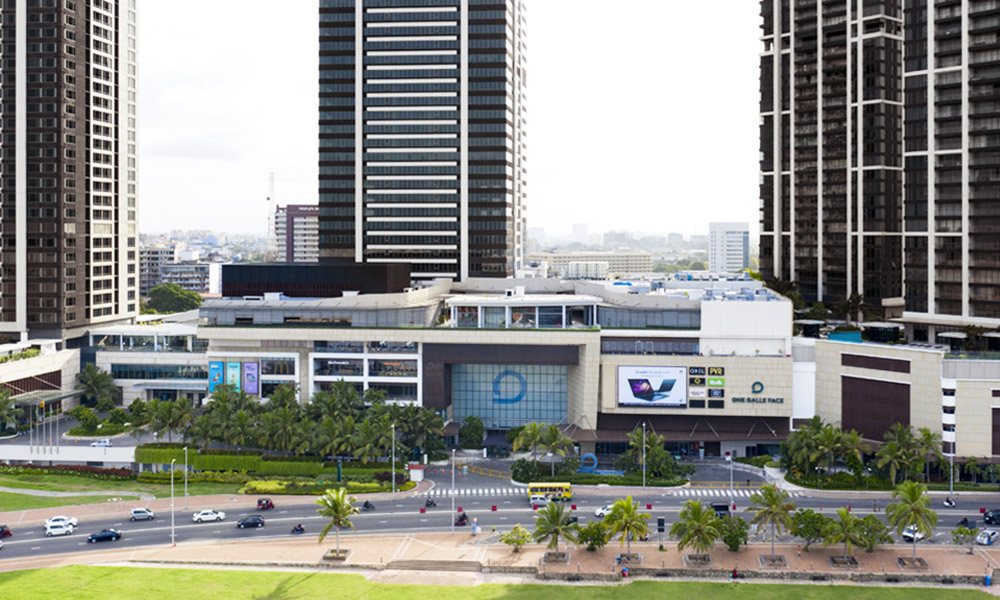
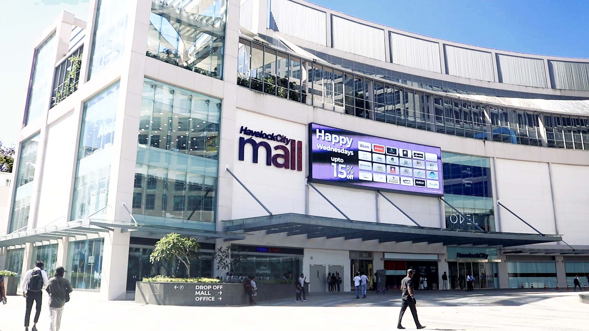
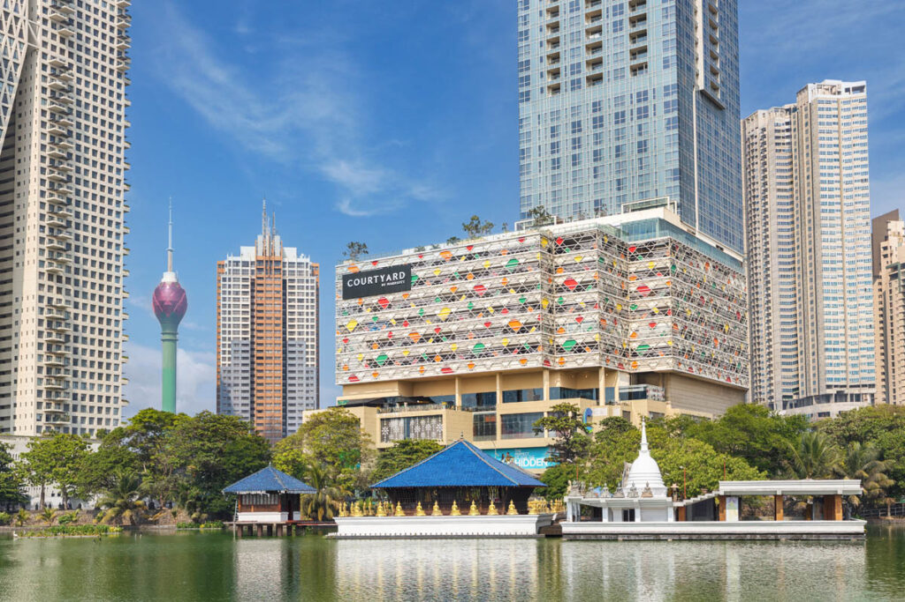

One Galle Face
Colombo's most prestigious luxury mall, situated opposite the Galle Face Green. It offers a premium international shopping experience.
- Top Brands: Rolex, Diesel, Armani Exchange, Apple.
- Features: PVR Cinemas (Multiplex), Adventure Zone for kids, and a massive international food court.

Havelock City Mall
The newest addition to Colombo's retail scene, offering a massive, ultra-modern shopping and entertainment hub integrated into a luxury residential city.
- Top Brands: Odel, Abans, H&M, Swarovski.
- Features: IMAX Cinema, Wet & Wild Play Area, and a vibrant multi-cuisine dining pavilion.

Colombo City Centre (CCC)
A sleek, modern lifestyle mall situated right next to the beautiful Beira Lake. It is a favorite for tech enthusiasts and foodies.
- Top Brands: Samsung, Miniso, Aldo, MAC Cosmetics.
- Features: Scope Cinemas, VR Gaming Lounge, and an outdoor terrace overlooking the lake.